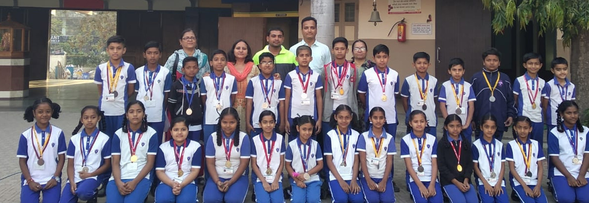
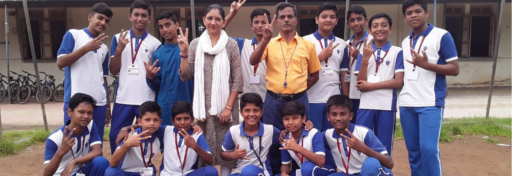
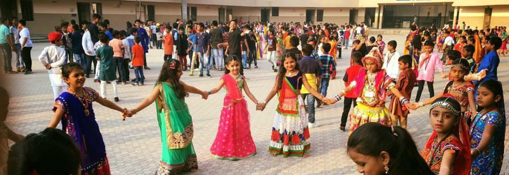
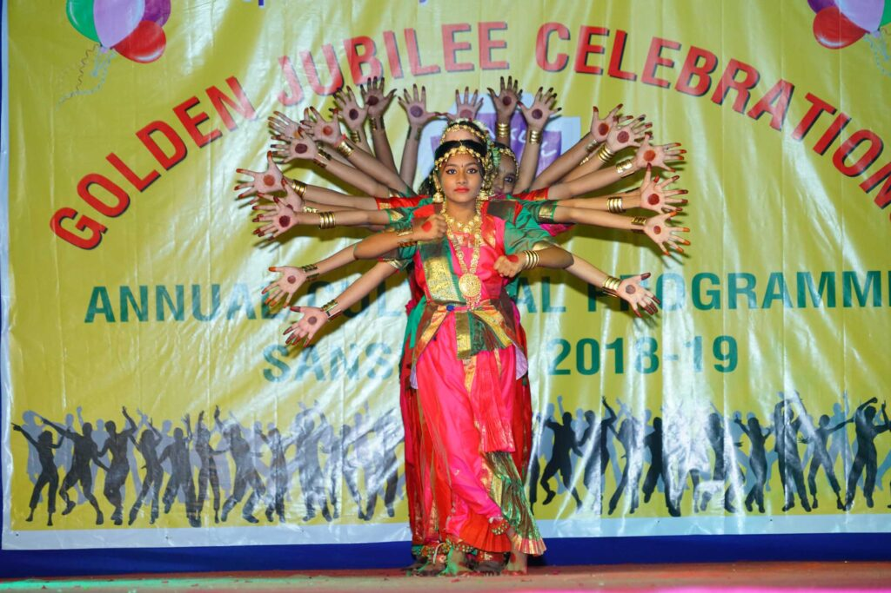

Play School – Sr. KG
Pre-Primary Section
15 air-conditioned classrooms with smart boards, CCTV throughout, a dedicated play station for hands-on Language, Maths and Science, plus a playground and school hall.
Explore Pre-Primary


Started by forty young Jaycees of the Navsari Junior Chamber who each put in ₹1,000, Vidyakunj has grown into a Play School–to–Standard 12 institution serving over 2,500 students on a single Navsari campus.
One school, one journey
A child who joins our Play School can stay with the same institution right through the Standard 12 board exam — no transfers, no new school to settle into.
15 air-conditioned classrooms with smart boards, CCTV throughout, a dedicated play station for hands-on Language, Maths and Science, plus a playground and school hall.
Explore Pre-Primary
53 teachers, most of them with a decade or more at Vidyakunj. A broad curriculum with English, Gujarati, Hindi, Sanskrit, Maths, EVS/Science and Social Science.
Explore Primary
Gujarat board SSC and HSC, with Science and Commerce streams in Standards 11 and 12. Twelve divisions, question banks and practice tests for every subject.
Explore SecondaryOur beginning
In 1968–69 a group of Jaycees from the Navsari Junior Chamber set out to build an English-medium school that taught modern subjects without letting go of Indian culture — and that ordinary families in Navsari could actually afford.
The initiative was taken by Mrs. Meeraben J. Desai, Dr. Manharbhai I. Shah, Mr. Jal Baria, Mr. Bharat Gandhi and the Jaycees team of 1968–69. Around forty members contributed ₹1,000 each, and the school opened in rented premises on Gandevi Road.
Land followed. Shri Ukabhai Patel and Shri Rambhai Patel of Kachhiyawadi donated roughly 1.75 lakh square feet on Gandevi Road, and the family of social worker Shri Hargovan Kaka Rathod funded the Pre-Primary and Primary buildings.
The full history

What the campus offers
The Pre-Primary section runs 15 air-conditioned classrooms fitted with smart boards for audio-visual teaching.
All Pre-Primary classrooms are connected by closed-circuit cameras, so supervision does not depend on who is standing in the corridor.
A dedicated space where children perform basic Language, Maths and Science experiments rather than only reading about them.
Poetry recitation, skits, elocution, storytelling and dance competitions are all held in-house, in our own hall.
An open playground for physical education and free play, used daily across the Primary and Pre-Primary sections.
Subject-wise question banks and board practice tests published for Standards 9 to 12, free for every enrolled student.

Track record
Vidyakunj students have finished at the top in public examinations in Mathematics, Commercial Maths, Statistics, Economics and Gujarati, and have been nominated to the National Science Congress at national level on several occasions.
Alumni now work as doctors, chartered accountants, engineers, managers, architects, professors, lawyers and business owners.
Notice board
Examination schedules, unit-test timetables and division-wise results are published here for parents and students.
Division-wise result sheets for 9-B, 9-C, 10-A/B/C, 11 & 12 Science and Commerce.
Board practice test timetable ahead of the SSC and HSC examinations.
Section-wise reporting and dispersal timings for the academic year.
Our goal is for every student to reach his or her developmental potential; not just academically, but socially and emotionally as well. We emphasised the importance of each individual child, allowing the child to achieve maximum potential, no matter what the background.
There is nothing that cannot be achieved if there is synergy in the team — curious children ever-willing to learn, concerned parents who support our ventures, and diligent staff who go beyond their call of duty.

Admission is offered to all boys and girls irrespective of caste, creed, race or status, on the basis of vacant seats in the class applied for.